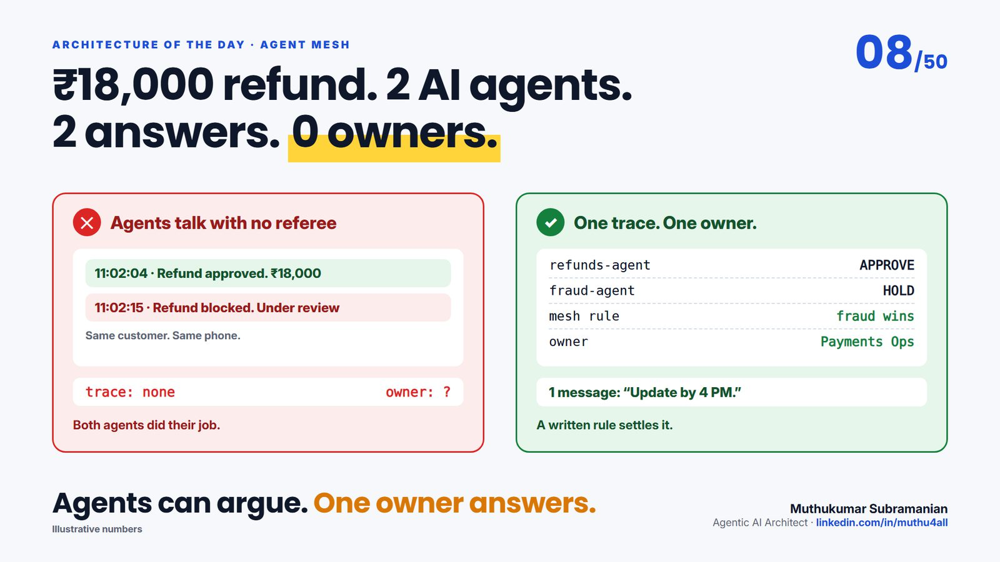

Two AI Agents Disagreed on a Refund. Who's Responsible?
By Muthukumar Subramanian · Agentic AI Architect

A customer in Madurai asks for an ₹18,000 refund.
The Refunds agent checks the order and says yes. It sends a message: "Refund approved."
Eleven seconds later, the Fraud agent sees three refunds on the same account this week and says no. It sends a message: "Refund blocked."
The customer now has both messages on the same phone, and a screenshot of them on LinkedIn.
(The story is illustrative. The design flaw isn't.)
Both agents did their jobs. Both were right by their own rules. So who's responsible for the mess?
Here's my contrarian take: agents disagreeing isn't the failure. Agents disagreeing with no referee is.
The architecture today
If you run microservices at scale, you've probably met the service mesh. Istio and Linkerd are the common names. It puts a small proxy beside each service, or in the newer ambient style, in a shared layer underneath. Those proxies handle identity, encryption, retries, traffic rules and tracing, so the service code doesn't have to.
Before the mesh, every team wrote that plumbing by hand, badly and differently. The mesh turned "who called whom, and were they allowed to?" into something you could answer.
Now look at agents. Refunds calls Fraud. Fraud calls Payments. Payments calls a bank's agent. Each hop is a decision, and most companies have no record of the chain.
👉 [IMAGE: A-day08-2-in-article-architecture.png]
Caption: An agent mesh sits above the service mesh you already run. Grey is existing. Amber is new.
Where AI plugs in now: an agent mesh
Same idea, one level up. Instead of every agent team writing its own plumbing, every agent-to-agent call passes through a shared layer that does four things:
→ Identity. Each agent has its own, so you know exactly who called. No shared API keys.
→ Policy. Who may call whom, and for what. The Support agent can ask Refunds a question. It can't ask Payments to pay.
→ Tracing. One trace ID across every hop, with each agent's input, decision and reason.
→ A tie-break rule. When two agents disagree, a written rule decides, and it names one human owner. A fraud hold beats a refund approval. Payments Ops owns that call. And only one agent speaks to the customer.
The low-risk first step needs no new platform. Add one trace ID across your agents. Then write your top five conflicts on one page, with who wins and who owns each. That page will start more useful arguments than any tool.
Where it's heading with agents
The plumbing is already moving this way. The agentgateway project, which came out of Istio's ambient work, is now under the Linux Foundation and speaks both MCP and A2A. Istio announced experimental support for it this year. OpenTelemetry has conventions for agent spans, though they're still marked as in development, so expect them to change.
In two or three years, I think agent calls will be governed the way service calls are today: visible, policy-checked and boring.
The hard part won't be technical. A mesh can show you what happened. It can't decide who should have won. That's a business decision, and it belongs to a person. Which means the tie-break table becomes as important as the code.
👉 [IMAGE: A-day08-3-in-article-tie-break-table.png]
Caption: A tie-break table. Who wins each conflict, and which person owns it. Rules are illustrative: write your own.
Watch it work
The same refund, with a referee.
👉 [GIF: A-day08-4-in-article-one-trace.gif]
Caption: Two agents disagree. The mesh applies the rule, one owner gets the case, and the customer hears one voice.
Pros
→ One trace across every agent, so "why did it do that?" has an answer
→ Teams stop rewriting identity, policy and logging for each agent
→ Conflicts get settled by a written rule, not by whichever agent spoke last
Cons
→ Another layer to run, and most of this tooling is young. Expect alpha features and changing standards
→ Every hop adds latency and cost, and a mesh makes it tempting to add more agents than you need
→ Traces hold prompts and customer data, so your observability system now needs the same protection as your database
The opportunity
Every company that followed Day 4 and built one agent per domain will reach this problem within a year. More agents, more handoffs, and nobody can explain one decision end to end.
That's the market: agent observability and policy enforcement. Products that trace and govern agent-to-agent calls across vendors, and services that map a company's conflicts and write its tie-break rules.
Two roles are forming around it. A forward deployed engineer (FDE) is an engineer who sits with the customer's team and ships the agent on their real systems, so that's the person who finds out that Fraud and Refunds have never spoken to each other. Then someone inside has to own the rules and the 2 AM calls, and you'll see that person called an AI Agent Manager or AgentOps engineer. The titles are still settling. The job isn't.
Tools to try
Istio if you already run a service mesh · agentgateway for MCP and A2A traffic · OpenTelemetry for one trace across agents, with Langfuse to read it · Microsoft Entra Agent ID or Amazon Bedrock AgentCore Identity to give each agent its own identity.
Your turn 👇
When two agents disagree, who should decide: a written rule or a human every time? Pick one.
Tag the person in your company who'd get the call when both messages reach the customer.
Day 8 of 50 · follow along. Tomorrow: ₹2 for every invoice your AI agent reads. ₹0 while it sleeps.